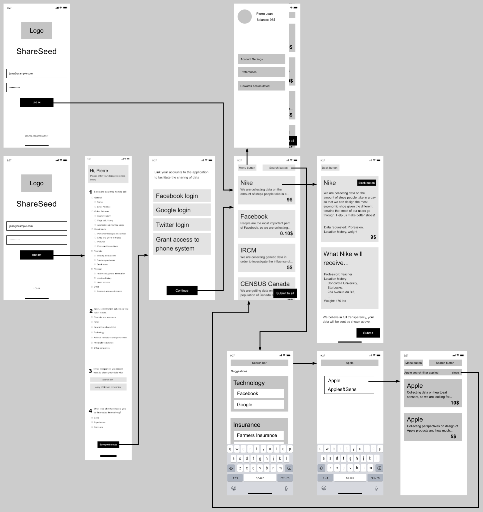
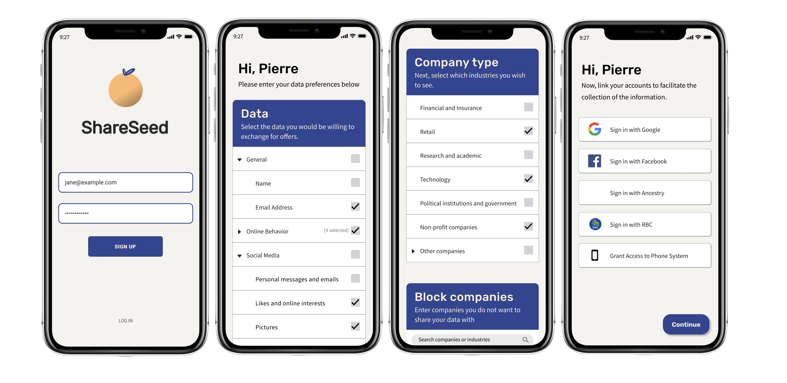
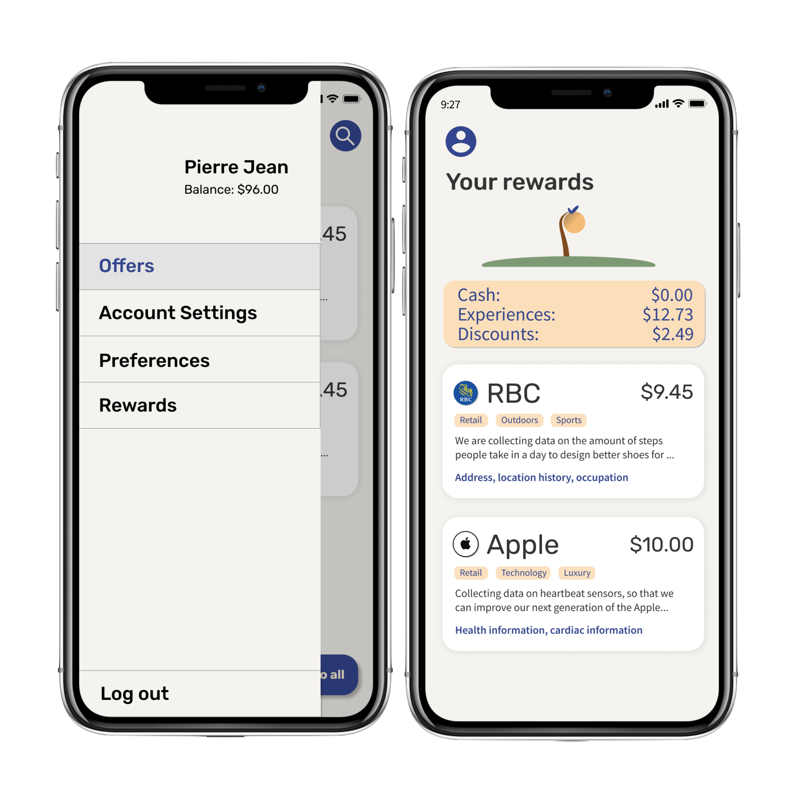
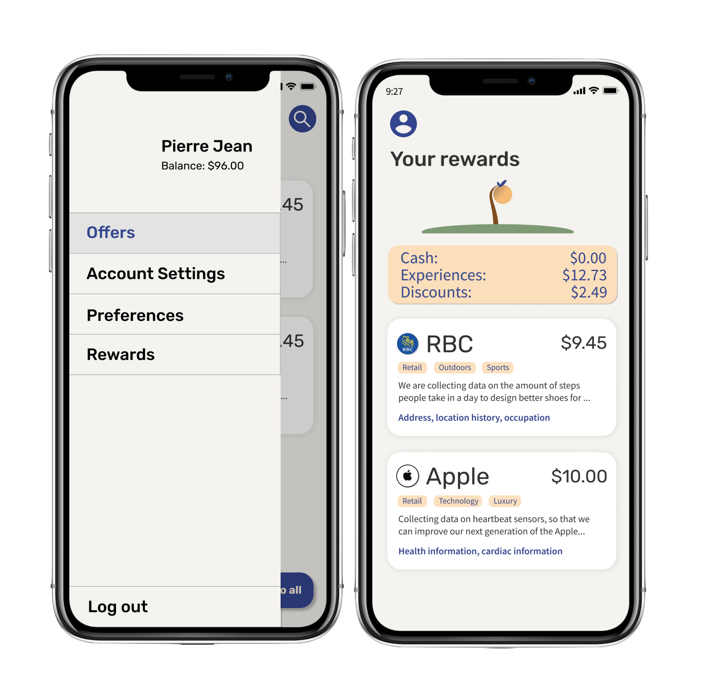

Take Back Control Of Your Data
The Motivation
As tech moves forward, we will be generating more and more data online. As it currently is, tech giants are collecting oceans of data about their user and using personal user’s data to increase their revenues. Trying to counteract the efforts of these giants to fish users’ data will always lead to failure. However, users must be granted control of their own data. Therefore, we want to allow users to willingly sell their data by creating an online marketplace for data.
The Research
Designing an application to be used by the wide public is one of the hardest tasks a UX designer will encounter during their career. Especially when the application touches a very sensitive subject such as private user data. To ensure that our personas would accurately represent the feelings of the public, we opted for methods that would reach as many people, as closely as possible. Therefore, we chose to send surveys and run interviews.
Surveys
The survey we created was administered through a google form and distributed to our user population using popular social medias and messaging platforms, as a means to collect data from the masses. Since surveys are easy to distribute and quicker to complete than in-person interviews, a large set of data could be gathered rapidly and would provide direct responses to our design and implementation questions. After analyzing the data from the surveys, we noticed the following factors. The vast majority of the user population worried about data privacy. Thus, the security of users’ data and their feeling of control over it was a main focus for our design moving on. Furthermore, we also realized that, while 53.9% of the surveyed population would not agree to sell their data, a good majority of said portion would sell their data under certain conditions. The most prevalent reason to not sell their data was the risk of data leaks. In consequence, we decided to add a disclaimer on all offers on our website would don a disclaimer specifying that all buyers need to abide by our data storing compliance.
Interviews
We opted to run two types of interviews : long in-depth interviews and shallow interviews in a vox pop form. The long and in-depth interviews were used to extract precise information and meaningful concerns from individuals on the potentials and pitfalls of a data marketplace platform. We recognized that many people with varying traits and backgrounds will voice distinct and personal opinions on the success of this platform which is invaluable to developers.
Personas
After scrutinizing our data, we were able to generate four user archetypes who would accurately represent our
surveyed population and be interested in using our application. These personas vary in age, gender, ethnicity,
career, and personalities, providing us with a wide range of traits which need to be pleased if they were to use
our platform.
Jessica Kwan
Jessica is very in touch with her online personal data and is aware that it is already being collected by large
corporations. This being said, she would gladly offer companies her data in exchange for money as a way to lend
her hand through her young adulthood. She is mildly concerned that her identity is a risk and doesn’t worry that
her collected data could be used against her.
She is “The Opportunist”.

Pierre Jean
Pierre is against making a profit by selling his data. Instead, he would love to donate it to researchers in
order to benefit society. He is against all large corporations turning a profit of the backs of their innocent
consumers and would be hypocritical if he sold them his data. As an academic, Pierre loves research and
lending himself to studies in the hopes of aiding in a new discovery or breakthrough. Thus, in his eye, his
data is most valuable to fellow academics who grapple to collect enough meaningful data to conduct their
studies.
He is “The Benefactor”.
Andrew Johnson
Andrew would consider selling his data but is uneasy with the idea that his personal information would be
floating around. Andrew is a family man and loves spending time with his beloved. If he can be guaranteed that
his data is safe and not used for malicious intent, he would sell it in in the hopes of receiving cash or
travel discounts in order to go on a getaway with his family.
He is “The Concerned”.
Charles Mansfield
Mr. Mansfield is a high profile lawyer who has managed to rise through the ranks and become respectfully
successful. This of course means that he has amassed large amounts of money throughout his career. Mr.
Mansfield is not particularly concerned with data privacy but would not benefit from selling his data for cash
since the little income from selling his data would be negligible in comparison to his finances. He, instead,
is looking for tangible goods or services in exchange for his personal data.
He is “The Established”.

User Journeys
Making user journeys allowed us to flesh out the user experience of our product. This implies acquiring a
better understanding of the flow of events in which our personas participate in when using the data marketplace
platform.This UX design tool allowed us to identify our personas’ moments of discomfort, i.e. pain points, while
interacting with our platform.
Jessica was annoyed by the inability to sell her data to multiple offers at once. Therefore, this pain point was
addressed in further iterations of our design by adding a “sell to all button”.
Charles’ biggest gripe with the platform was the difficulty to find offers with rewards rather than cash. This
pain point was rectified by allowing users to specify the types of rewards they wished to receive upon signing
up for the application. Moreover, a search bar on the “My Offers” page. These UI/UX elements also solved
Pierre’s pain point of being unable to find research-type offers.
Pierre’s irritated by the fact that he couldn’t filter out the data requests submitted by large corporations.
This pain point was also solved by allowing users to provide a list of “blacklisted” companies as well as a
“block this company” button within detailed offers’ pages should unwanted companies slip his mind.
Andrew was most displeased with ???


Sketches
In order to roughly visualize the final product, we created high-level sketches to give us more insight and feeling for the app design. At this stage in the design, we started making strong decisions about the layout of our application. For instance, we established that the offers would take the form of a list of cards. Moreover, we established the several main views that our users would be interacting with. Although these were preliminary, there were the foundation of the design as a whole.

Wireframes & User Flow
The wireframe is a skeleton of the application which allowed us to further concretize the layout and flow of operation of our application. At this stage, UI and styling was still not our main focus but rather the user’s interaction with the platform. We took the previously made sketches and created the different views containing very basic shapes. Once that was completed, we linked the views together in order to map out the typical interactions our personas encounter while searching for offers.
Color Palette
Before attempting to create our first mockups, we spent a significant amount of time debating the best choice of color to use for this type of application. Since personal data is a sensitive topic, we opted to choose few colors and soft colors in order to ease the user in and provide them with a sense of comfort while navigating the platform. The application’s colors are dark blue, peach, and black as seen above.

Typography
imilarly to the color palette, we decided to avoid harsh lettering in order to appease the user and make them
feel comfortable. We chose 2 fonts to use within our application.
The “Rubik” font was chosen for the text seen on the display. It is a modern yet approachable font.
The “Source sans” was chosen for the main text seen throughout the application in order to provide extra
sophistication over the “Rubik” font, while still remaining easy to read.
Mockups
 

Prototype
Prototyping was the last step of our interaction design process. In this stage we can experience the full UI and UX design of our application. The typical user flow can be experienced with the prototype and goes as follows. For instance, from the offers page, the current prototype shows the expected behavior with the Nike offer. It also shows the search functionality, where a user might want to type in ‘Apple’ and select the Apple company offers. The prototype also shows the signup process, and the menu tab which allows for a consistent app navigation. Lastly, the prototype also shows the initial “profiling” process of the users, from establishing the user’s preferences to connecting their design platforms.
Two functionalities are not included in the prototype. The first is the ability to click on the RBC and Apple cards from the “My Offers” page, currently only the Nike card is functional. The second is the “account settings" menu item from the hamburger menu is not currently clickable, the real button would open a browser to lead to an accounts settings page on ShareSeed’s portal.